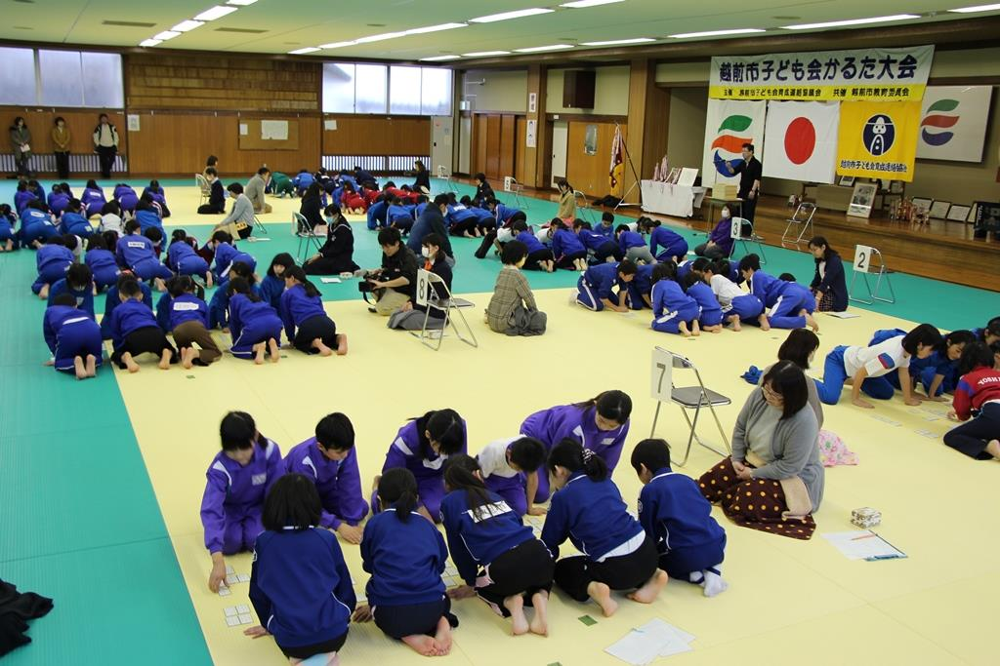
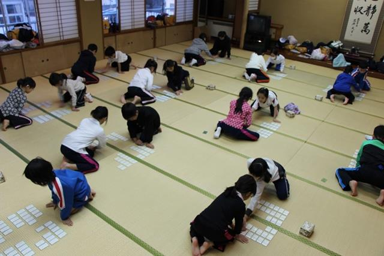

ほ ： 本気の勝負を見せつける！ かるた王国 越前市
一言でいうと？
「かるた王国越前市」と呼ばれているほど、越前市民は百人一首が大好き！
越前市は競技かるたにおいて名人を生み出したり、各大会で入賞したり、子供の頃から百人一首(ひゃくにんいっしゅ)にふれる機会が多いことから「かるた王国」といわれています。
ルールは？
読まれた札を相手より早く取る！
★競技かるたのルール
1.百人一首の100枚の札を裏向けにしてよく混ぜます。
2.互いに25枚ずつ取り、自分の陣地に3段に分けて並べます。
3.残りの50枚は箱に入れて使用しませんが、読み手は100枚の札を読むので、使わない札は空札となります。
4.自陣の札を取ったら1枚減り、敵陣の札を取ったら相手に札を1枚送って自陣の札を1枚減らすことができます。
5.自陣の札を早くなくした方が勝ちとなります。
強さの秘密は？
子どもの頃からかるたに触れるからと、雪国だから
市内では子供の頃からかるたに触れる機会があり、競技かるたを本格的に学ぶことができる教室も各地区で行われています。
また福井県が雪国であることも理由の1つではないかと言われています。雪の多い福井県では冬は外に出ることができないため、正月遊びとしてかるたが他の地域より親しまれてきたのではないかと考えられています。
取り組みは？
大会の開催やかるた教室
★越前市子ども会育成連絡協議会の取り組み
越前市子ども会育成連絡協議会では、毎年2月上旬に「越前市子ども会かるた大会」を開催しています。この大会は、競技かるたではなく5人一組のチームで戦う「源平合戦(げんぺいがっせん)」と呼ばれるかんたんなルールで行われます。大会前には、各地区の子ども会で練習が行われ、初めてかるたに触れる子どもも上の句と下の句を覚え、大会に挑戦します。
★越前市かるた協会の取り組み
越前市かるた協会では、公民館を中心に行われているかるた教室に講師を呼び、地域の子どもたちに教えています。現在、約200人が競技かるたを学んでいます。また、毎年1月下旬に「越前市少年少女かるた選手権大会」を開催し、毎年、熱い戦いが繰り広げられます。
かるたを始めたい！
越前市かるた協会や公民館に！
各地区の公民館でかるた教室をしています。
競技かるたに興味のある方は越前市かるた協会まで！
問い合せ先 ≫ 越前市かるた協会事務局(山本)
【電話】0778-22-0172
越前かるたを作ろうと思ったきっかけの一つが、この「かるた王国越前市」です！少し前に『ちはやふる』ブームもありましたね。かるた好きは越前市民の皆さんに、この「越前かるた」も好きになってもらえたら嬉しいです。